Chapter 12. 가상 함수와 추상 클래스¶
'명품 C++Programming - 황기태' 9장 학습 내용
1절. 가상 함수
2절. 오버라이딩
3절. 동적 바인딩
4절. 가상 소멸자
5절. 가상 함수
6절. 추상 클래스
1절. 가상 함수¶
가상 함수¶
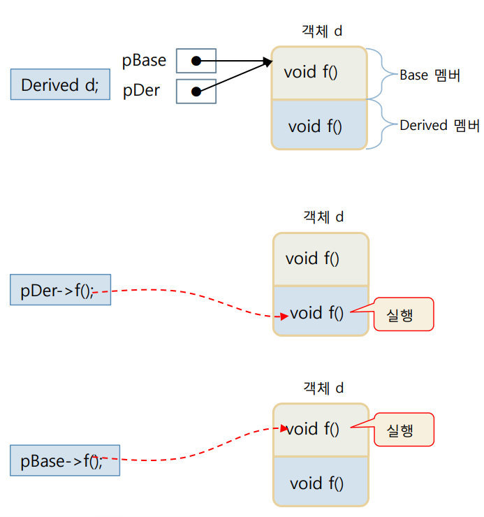
-
예제 1. 파생 클래스에서 함수를 재정의하는 사례 예제
SourceCodeChecking -
가상 함수(virtual function)
- virtual 키워드로 선언된 멤버 함수
- virtual 키워드의 의미
- 동적 바인딩 지시어
- 컴파일러에게 함수에 대한 호출 바인딩을 실행 시간까지 미루도록 지시
2절. 오버라이딩¶
오버라이딩¶
- 함수 오버라이딩(function overriding)
- 파생 클래스에서 기본 클래스의 가상 함수와 동일한 이름의 함수 선언
- 기본 클래스 가상 함수의 존재감 상실
- 파생 클래스에서 오버라이딩한 함수가 호출되도록 동적 바인딩
- 함수 재정의
- 다형성의 한 종류
함수 재정의와 오버라이딩 사례 비교¶
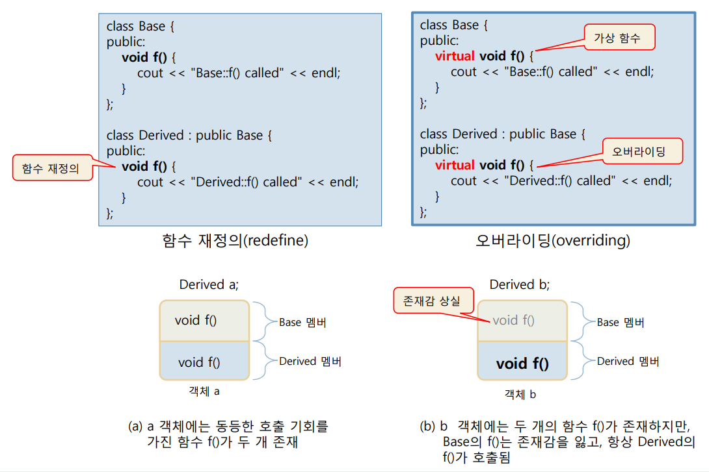
함수 재정의와 오버라이딩¶
- 가상 함수를 재정의하는 경우 : 오버라이딩
- 동적 바인딩 발생
- 가상 함수를 재정의하지 않는 경우 : 함수 재정의
- 컴파일 시간에 결정된 함수 단순 호출(정적 바인딩 발생)
- Java는 무조건 동적 바인딩이 일어나는 언어
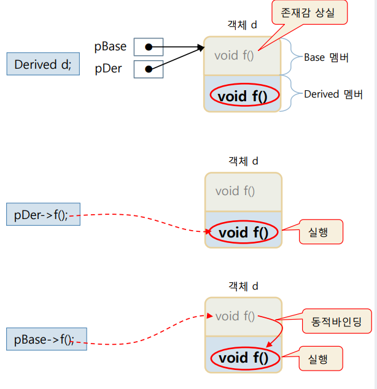
- 예제 2. 오버라이딩과 가상 함수 호출 예제
SourceCodeChecking
오바리이딩의 목적¶
-
파생 클래스에서 구현할 함수 인터페이스 제공
-
파생 클래스의 다형성
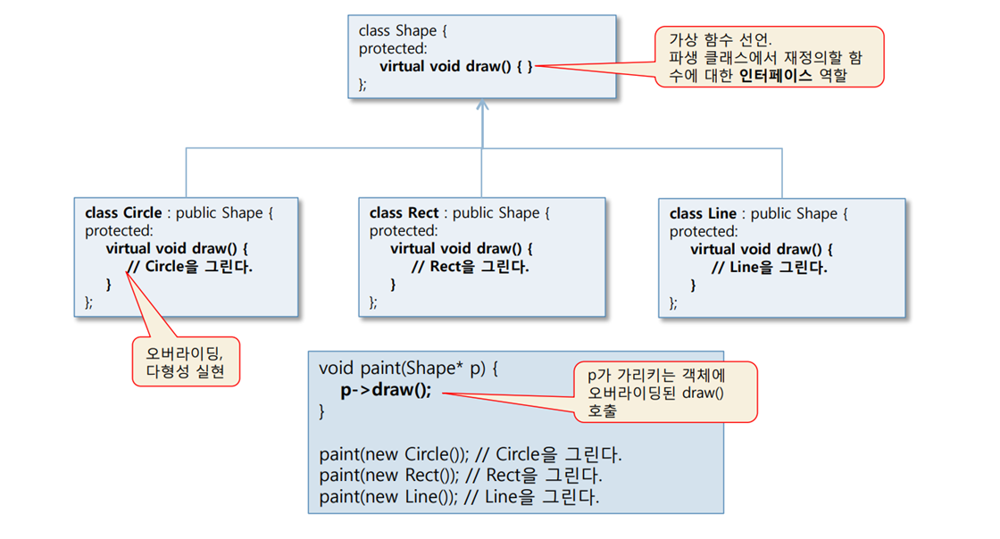
-
다형성의 실현
- draw() 가상 함수를 가진 기본 클래스 Shape
- 오버라이딩을 통해 Circle, Rect, Line 클래스에서 자신만의 draw() 구현
3절. 동적 바인딩¶
동적 바인딩¶
- 파생 클래스에 대해
- 기본 클래스에 대한 포인터로 가상 함수를 호출하는 경우
- 객체 내에 오버라이딩한 파생 클래스의 함수를 찾아 실행
- 실행 중에 이루어짐
- 실행시간 바인딩, 런타임 바인딩, 늦은 바인디
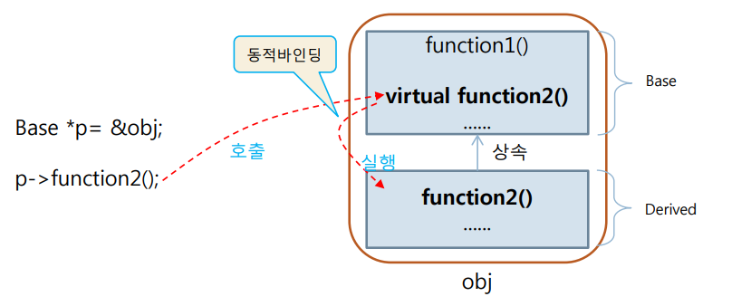
오버라이딩된 함수를 호출하는 동적 바인딩¶
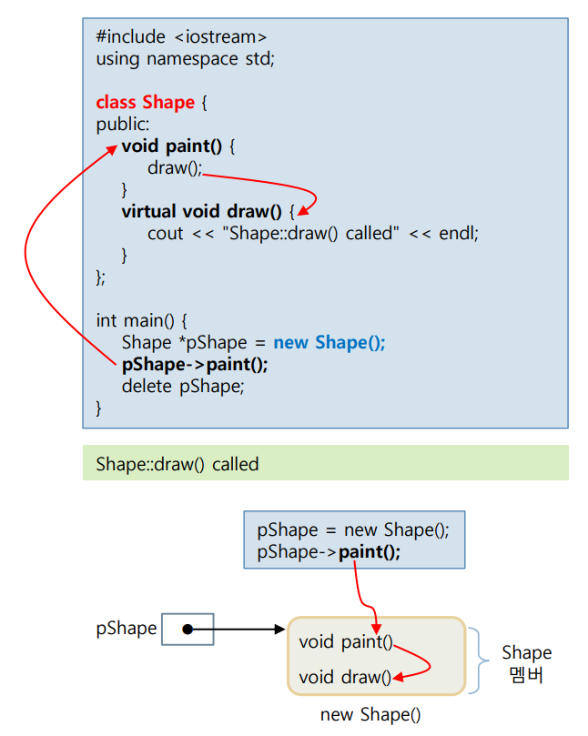
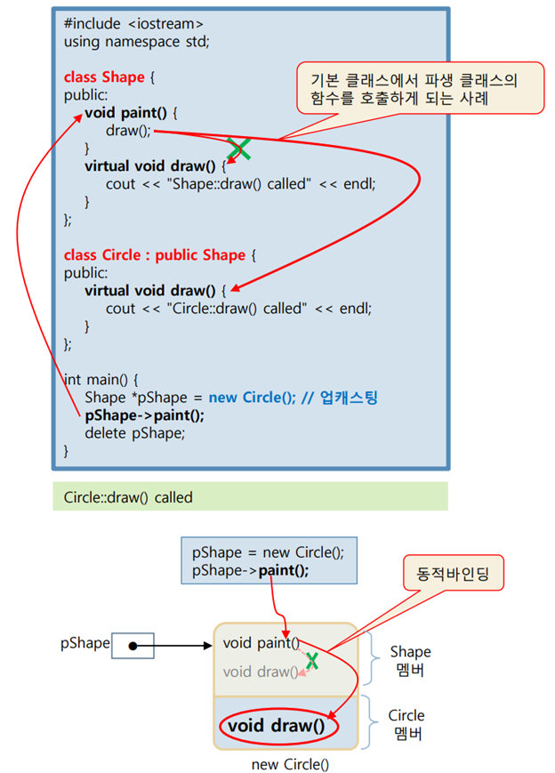
오버라이딩의 특징¶
- 오버라이딩의 성공 조건
- 가상 함수 이름, 매개 변수 타입과 개수, 리턴 타입이 모두 일치
- 오버라이딩 시 virtual 지시어 생략 가능
- 가상 함수의 virtual 지시어는 상속
- 파생 클래스에서 virtual 생략 가능
- 가상 함수의 접근 지정
- private, protected, public 중 자유롭게 지정 가능
class Base{
public:
virtual void fail();
virtual void success();
virtual void g(int);
};
class Derived : public Base{
public:
virtual int fail();
// 오버라이딩 실패 : 리턴 타입이 다름
virtual void success();
// 오버라이딩 성공
virtual void g(int, double);
// 오버로딩 사례 : 정상 컴파일
};
class Base{
public:
virtual void f();
};
class Derived : public Base{
public:
virtual void f();
// virtual void f()와 동일한 선언
};
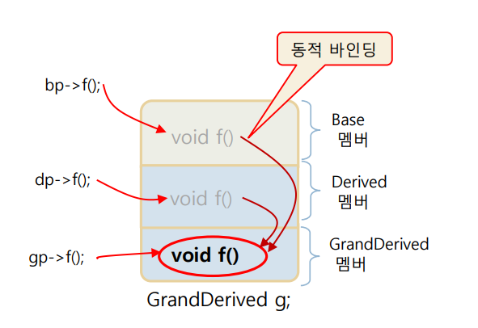
- 예제 3. 상속이 반복되는 경우 가상 함수 호출 예제
SourceCodeChecking
오버라이딩과 범위 지정 연산자(::)¶
- 범위 지정 연산자(::)
- 정적 바인딩 지시
- 기본 클래스::가상 함수() 형태로 기본 클래스의 가상 함수를 정적 바인딩으로 호출
- Shape::draw();
class Shape{
public:
virtual void draw() {...}
...
};
class Circle : public Shape{
public:
virtual void draw(){
Shape::draw();
// 기본 클래스의 draw()를 실행
...
}
};
- 예제 4. 범위 지정 연산자(::)를 이용한 기본 클래스의 가상 함수 호출 예제
SourceCodeChecking
4절. 가상 소멸자¶
가상 소멸자¶
- 소멸자를 virtual 키워드로 선언
- 소멸자 호출 시 동적 바인딩 발생
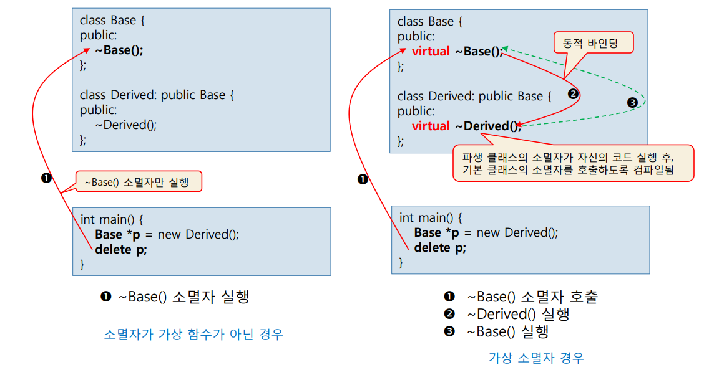
- 예제 5. 가상 소멸자 선언 예제
SourceCodeChecking
오버로딩과 함수 재정의, 오버라이딩의 비교¶
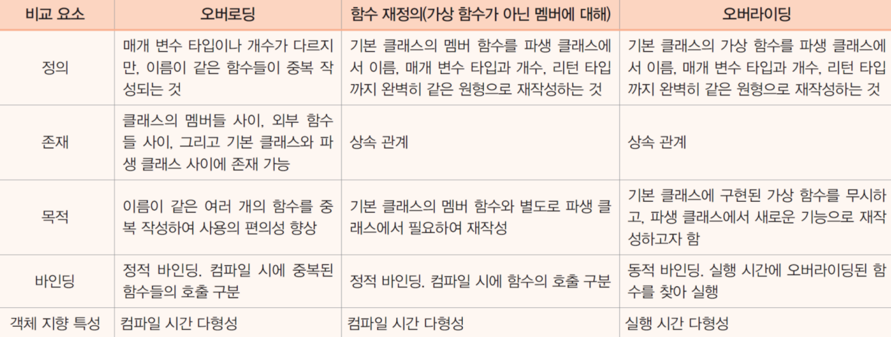
5절. 가상 함수¶
가상 함수를 가진 기본 클래스의 목적(Shape 클래스 예시)¶
- Shape는 상속을 위한 기본 클래스로의 역할
- 가상 함수 draw()로 파생 클래스의 인터페이스를 보여줌
- Shape 객체를 생성할 목적 아님
- 파생 클래스에서 draw() 재정의
- 자신의 도형을 그리도록 유도
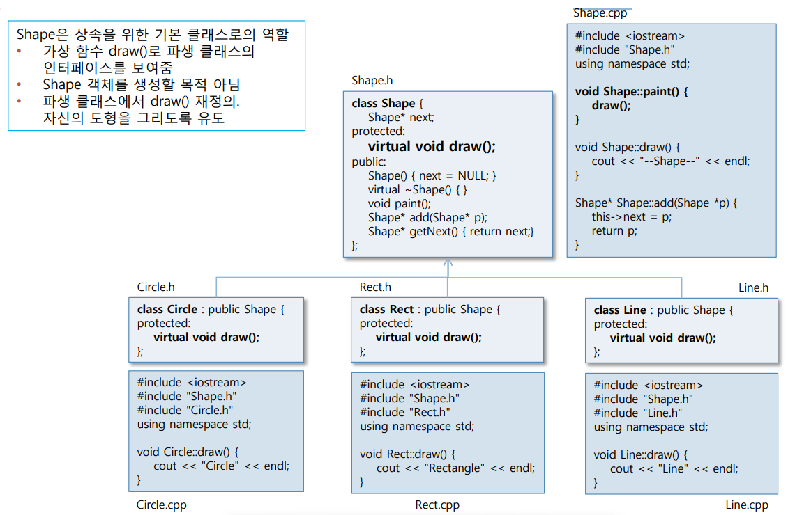
가상 함수 오버라이딩¶
- 파생 클래스마다 다르게 구현하는 다형성
void Circle::draw(){ cout << "Circle" << endl; }
void Rect::draw(){ cout << "Rectangle" << endl; }
void Line::draw(){ cout << "Line" << endl; }
- 파생 클래스에서 가상 함수 draw()의 재정의
- 어떤 경우에도 자신이 만든 draw()가 호출됨을 보장 받음
- 동적 바인딩에 의해
동적 바인딩 실행 : 파생 클래스의 가상 함수 실행¶
#include <iostream>
#include "Shape.h"
#include "Circle.h"
#include "Rect.h"
#include "Line.h"
using namespace std;
int main(){
Shape *pStart = NULL;
Shape *pLase;
pStart = new Circle();
// 처음에 원 도형 생성
pLast = pStart;
pLast = pLast->add(new Rect());
// 사각형 객체 생성
pLast = pLast->add(new Circle());
// 원 객체 생성
pLast = pLast->add(new Line());
// 선 객체 생성
pLast = pLast->add(new Rect());
// 사각형 객체 생성
// 현재 연결된 모든 도형을 화면에 그림
Shape *p = pStart;
while(p != NULL){
p->paint();
p = p->getNext();
}
// 현재 연결된 모든 도형을 삭제
p = pStart;
while(p != NULL){
Shape* 1 = p->getNext();
// 다음 도형 주소 기억
delete p;
// 기본 클래스의 가상 소멸자 호출
p = q;
// 다음 도형 주소를 p에 저장
}
}
// 출력 예시
// Circle
// Rectangle
// Circle
// Line
// Rectangle
main() 함수가 실행될 때 구성된 객체의 연결¶
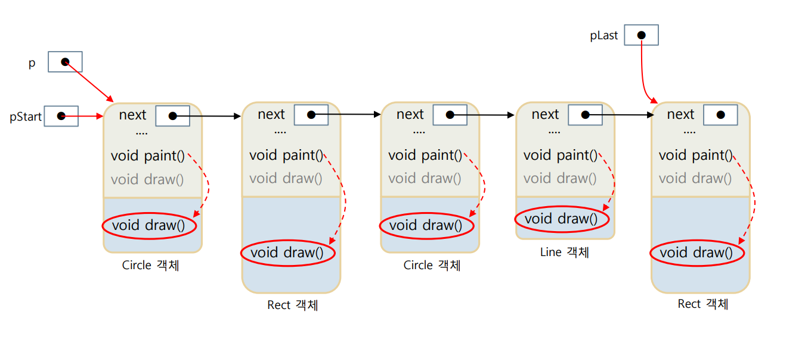
기본 클래스의 포인터 활용¶
- 기본 클래스의 포인터로 파생 클래스 접근
- pStart, pLast, p의 타입이 Shape*
- 링크드 리스트를 따라 Shape을 상속받은 파생 객체들 접근
- p->paint()의 간단한 호출로 파생 객체에 오버라이딩된 draw() 함수 호출
순수 가상 함수¶
- 기본 클래스의 가상 함수 목적
- 파생 클래스에서 재정의할 함수를 알려주는 역할
- 실행할 코드를 작성할 목적이 아님
- 기본 클래스의 가상 함수를 굳이 구현할 필요가 있는가 ?
- 순수 가상 함수(Pure Virtual Function)
- 함수의 코드가 없고 선언만 있는 가상 멤버 함수
- 선언 방법
- 멤버 함수의 원형 = 0; 으로 선언
6절. 추상 클래스¶
추상 클래스¶
- 최소한 하나의 순수 가상 함수를 가진 클래스
// 아래의 Shape 클래스는 추상 클래스
class Shape{
Shape *next;
public:
void paint(){ draw(); }
virtual void draw() = 0;
};
void Shape::paint(){
draw();
// 순수 가상 함수라도 호출은 가능
}
- 추상 클래스 특징
- 온전한 클래스가 아니므로 객체 생성 불가
Shape shape;
Shape *p = new Shape();
// 모두 컴파일 오류가 발생
// error C2259:'Shape' : 추상 클래스를 인스턴스화할 수 없습니다.
- 추상 클래스의 포인터는 선언 가능
추상 클래스의 목적¶
- 추상 클래스의 인스턴스를 생성할 목적 X
- 상속에서 기본 클래스의 역할을 하기 위한 목적
- 순수 가상 함수를 통해 파생 클래스에서 구현할 함수의 형태(원형)을 보여주는 인터페이스 역할
- 추상 클래스의 모든 멤버 함수를 순수 가상 함수로 선언할 필요는 없음
추상 클래스의 상속과 구현¶
- 추상 클래스의 상속
- 추상 클래스를 단순 상속하면 자동 추상 클래스
- 추상 클래스 구현
- 추상 클래스를 상속받아 순수 가상 함수를 오버라이딩
- 파생 클래스는 추상 클래스가 아님
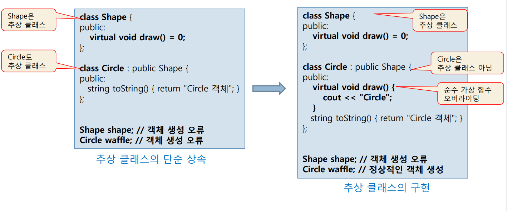
Shape를 추상 클래스로 수정¶
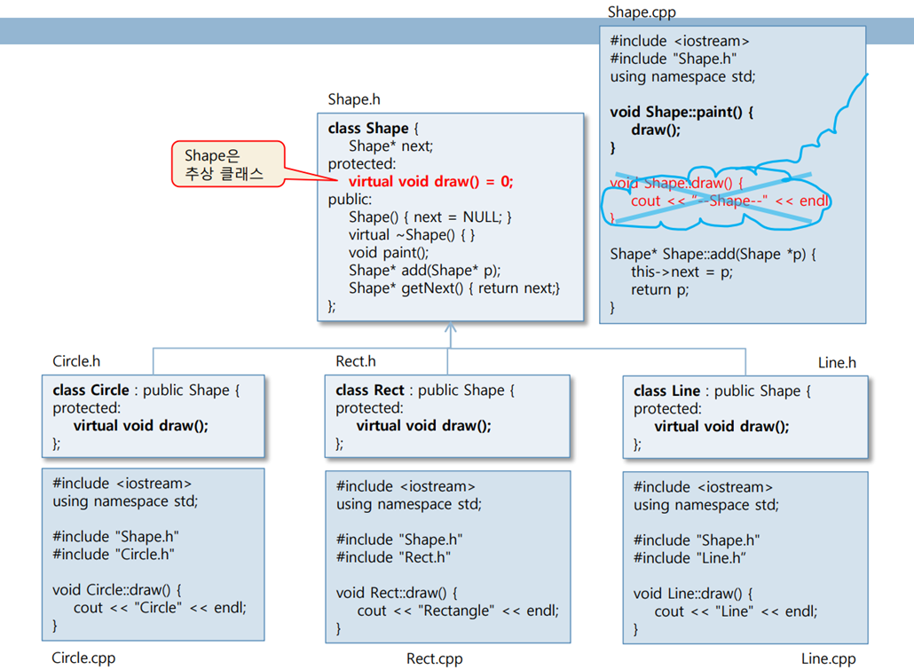
-
예제 6. 추상 클래스 구현 연습 예제
SourceCodeChecking -
예제 7. 추상 클래스를 상속받는 파생 클래스 구현 연습 예제
SourceCodeChecking